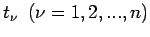
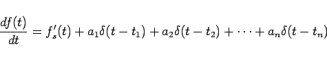
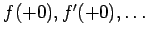

Inhalt Index DeskTop Bronstein

 Integraltransformationen Laplace-Transformation Eigenschaften der Laplace-Transformation Bildfunktionen spezieller Funktionen
Integraltransformationen Laplace-Transformation Eigenschaften der Laplace-Transformation Bildfunktionen spezieller Funktionen


Die Bildfunktionen stückweise differenzierbarer Funktionen lassen sich mit Hilfe der  -Funktion leicht angeben:
-Funktion leicht angeben:
Wenn f(t) stückweise differenzierbar ist und an den Stellen  die Sprünge  hat, dann ist ihre erste Ableitung in der Form
hat, dann ist ihre erste Ableitung in der Form
|  | (15.31) |
darstellbar, wobei in den Bereichen, in denen f(t) differenzierbar ist, f's(t) die gewöhnliche Ableitung von f(t) bedeutet.
Wenn Sprünge erst in den Ableitungen auftreten, gelten für diese ganz entsprechende Formeln. Auf diese Weise lassen sich die Bildfunktionen zu Kurvenzügen, die sich aus Parabelbögen beliebig hoher Ordnung zusammensetzen (empirisch gefundene Kurven wird man meist durch solche einfachen Funktionen annähern), ohne großen Rechenaufwand angeben. Bei formaler Anwendung von (15.13) sind im Falle einer Sprungstelle die Werte  gleich Null zu setzen.
| Beispiel A: Unipolarer Sägezahnimpuls |
| Beispiel B: Unipolarer Dreieckimpuls, bipolarer Rechteckimpuls |
|
|
| Beispiel C: Unipolarer Trapezimpuls, bipolarer Rechteckimpuls |
|
|
| Beispiel D: Unipolarer Parabelimpuls, bipolarer Sägezahnimpuls |
|
|